- 開兩個視窗：左邊放動畫，右邊放 VS Code。
- 每個小標題旁邊有「▶ 看動畫」，點下去就跳到那一段。看完一段，暫停，照手冊做一次。
- 黑底框裡的指令和 prompt：反白、Ctrl+C 複製，貼上就好，不用照著打。
- 圖太小看不清楚，點一下圖，會開一個新分頁看原圖。
- 用 Mac：指令裡的
start換成open，路徑的\換成/。
這堂課的重點：持久化
前端課的裝備物資，資料放在瀏覽器裡（假資料）：按 F5 重新整理，剛新增的就不見了。這堂課把它變成真的：資料寫進 PostgreSQL 資料庫，F5 之後還在、換一台電腦也還在。
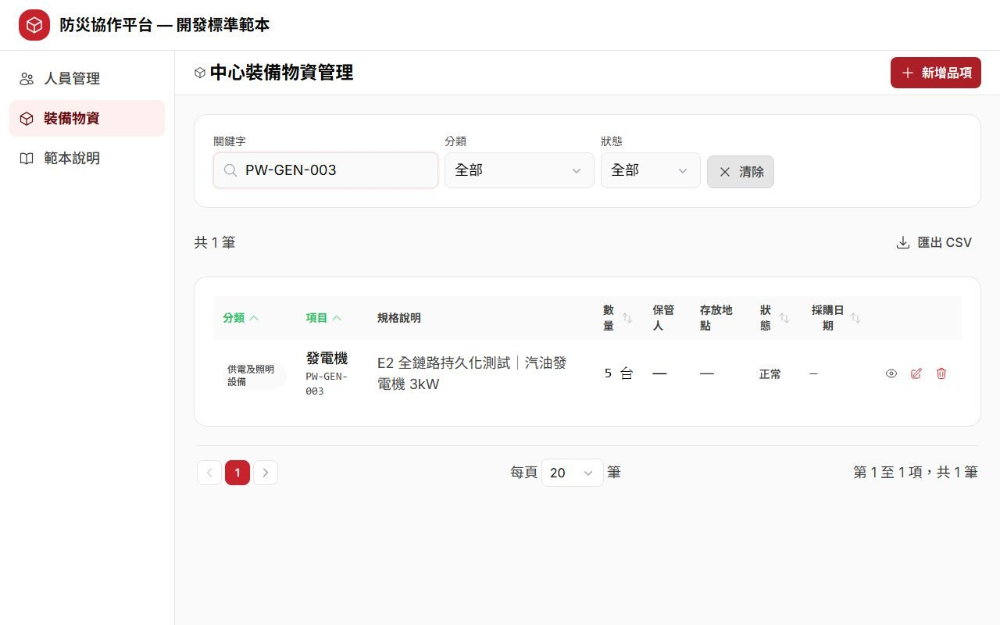
PW-GEN-003、按 F5 重新整理，它還在。F5 還在，才叫真的。| 前端課（假資料） | 這堂課（真後端） | |
|---|---|---|
| 資料放哪 | 瀏覽器記憶體 | PostgreSQL 的資料表 equipment_item |
| 按 F5 之後 | 改的都不見，回到 24 筆 | 改的還在 |
編碼 PW-GEN-003 誰算 | 前端算 | 後端算（前端只先顯示） |
| 怎麼證明 | 看畫面 | 看畫面＋直接打 API＋直接查資料庫 |
先認得這幾個詞
| Step | 這一章做什麼 | 時間 |
|---|---|---|
| Step 0 | 下載教材、跑前置檢查（12 項） | 10 分 |
| Step 1 | 看對照頁：同一句需求，有規矩、沒規矩的程式差在哪 | 10 分 |
| Step 2 | 把範本 API 跑起來：Swagger 打一輪、跑測試、直查資料庫；認識四份規矩 | 35 分 |
| Step 3 ★ | 只給 PRD → AI 出選擇題 → 你拍板 → 看文件和圖 → 說「開工」→ 三路驗收 | 40 分 |
| Step 4 | 貼一個 prompt：AI 自己跑全鏈路測試、自己修，再叫分身挑錯，最後交報告 | 20 分 |
| Step 5 | 回公司怎麼用 | 5 分 |
| Step 6 | 課後練習：把前端課問卷那行 TODO 變成真的 API | 課後 |
- 教材下載到電腦，用 VS Code 打開。
- 前置檢查 12 項，最後寫「可以開課」。
課前要先裝好：.NET SDK 10、PostgreSQL 18（帳號 postgres、密碼 12345）、Node.js、pnpm、Git、VS Code，還有 VS Code 裡的 AI 助手 Claude Code（要登入）。沒裝好的，課前找講師。
課前一天先跑一次：第一次 dotnet run 要下載套件、建資料庫；Step 4 第一次跑測試要下載瀏覽器（約 150MB）。這些等待不要留到上課。
課前下載指令（下載完教材、做完 ③ 之後，在教材根目錄的終端機整段貼上）
cd step2_speedrun_kit\2.5_sample_api\sample-api
dotnet restore
cd ..\..\..\step4_loop_e2e\fullchain-app
pnpm install
cd ..\e2e
npm install
npx playwright install chromium
cd ..\..dotnet restore最後寫「已還原」或 Restored：.NET 套件（含 Swagger）下載好了。pnpm install最後寫 Done：前端的套件好了。npm install沒有紅色 ERR：測試工具好了。npx playwright install chromium跑到 100%，或直接結束（已經下載過）：測試用的瀏覽器好了。
① 打開終端機 ▶ 看動畫
先打開 VS Code：按鍵盤的 Windows 鍵，打 Visual Studio Code，點開。上面選單「終端機」→「新增終端」。下面出現 PS 開頭的一行，就是在等你打指令。
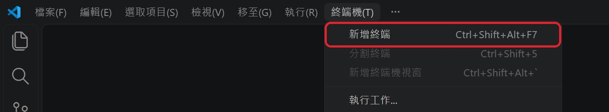
② 下載教材 ▶ 看動畫
一行貼一次、按 Enter。沒有 D 槽，就把第一行換成 cd C:\。
cd D:\
git clone https://github.com/xian711/AI_CRUD_Workshop_Backend_EASY.git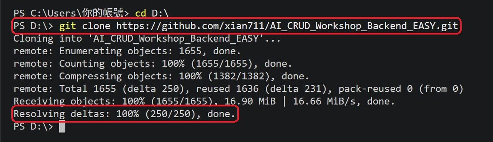
← 手機可左右滑看整張圖 →
done，就是下載完成。說「git 不是內部或外部命令」：還沒裝 Git。到 https://git-scm.com/download/win 下載安裝，一路按 Next；裝完關掉 VS Code 再打開，打 git --version 看到版本號，再下載一次。③ 用 VS Code 打開教材資料夾 ▶ 看動畫
- 選單「檔案」→「開啟資料夾」，選剛下載的
AI_CRUD_Workshop_Backend_EASY，按「選取資料夾」。 - 問你信不信任作者，按「信任資料並繼續」。
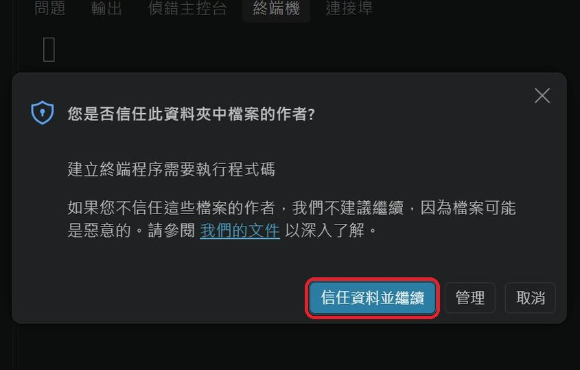
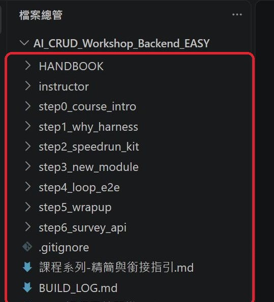
④ 跑前置檢查：12 項 ▶ 看動畫
再開一個終端機（選單「終端機」→「新增終端」），一行貼一次、按 Enter：
cd step0_course_intro
.\preflight.ps1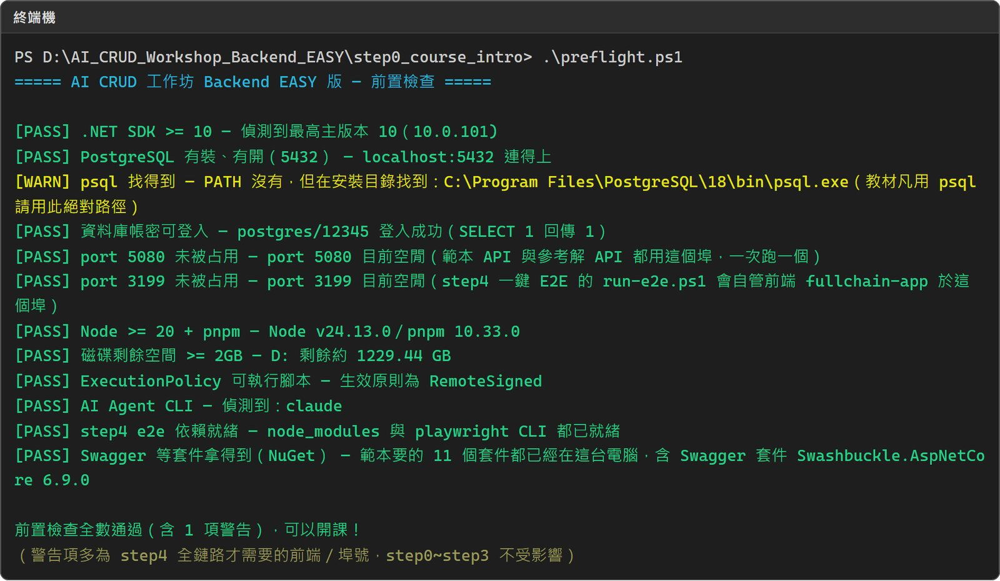
← 手機可左右滑看整張圖 →
- 最要緊的五項：.NET 版本、PostgreSQL 有裝有開、帳密登得進去、5080 埠空著、Swagger 等套件拿得到。這五項是紅色
[FAIL]，就照下面「卡住時」處理。 - psql 顯示黃色
[WARN]「PATH 沒有，但在安裝目錄找到」：沒關係。PATH 是 Windows 找程式的清單；不在清單上，就要打完整路徑。它把完整路徑印出來了，之後照抄。 - 其他黃色
[WARN]多半是 Step 4 才用到的，不擋你。
- 第 1 項 .NET 版本不對：到
https://dotnet.microsoft.com/download下載 .NET SDK 10，裝完關掉 VS Code 再打開，重跑 preflight。 - 5080 埠被占用：多半是上一個 API 還在跑，回那個終端機按 Ctrl+C。不確定是誰在用，就不要關它，找講師。
- 第 2 項寫「沒裝 PostgreSQL」：這台電腦還沒裝資料庫。
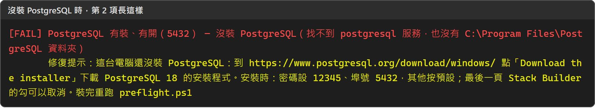
- 瀏覽器開
https://www.postgresql.org/download/windows/，點「Download the installer」，下載 PostgreSQL 18。 - 執行安裝程式。問密碼時打
12345；埠號（Port）保持5432；其他一路按 Next。 - 最後一頁 Stack Builder 的勾取消，按 Finish。psql 會跟著一起裝好。
- 回終端機，再跑一次
.\preflight.ps1。
- 瀏覽器開
- 第 2 項寫「有裝，但服務沒開」（最常見）：資料庫裝了，但沒在跑。
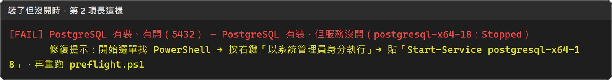
Get-Service postgresql* Start-Service postgresql-x64-18 - 第 2 項寫「只裝了一半」（有資料夾、沒有服務）：重新執行 PostgreSQL 安裝程式，裝完重跑 preflight。
- 第 2 項寫「服務在跑，但 5432 連不上」：多半是安裝時埠號不是 5432。最簡單的做法：重新安裝，埠號選 5432。不想重裝，找講師。
- 第 12 項寫「連不上 nuget.org」 ▶ 看動畫：Swagger 不用另外裝。比喻：NuGet 是 .NET 的套件商店，Swagger 是商店裡的一個套件；第一次
dotnet run會自己上商店下載。商店連不上，Swagger 就「沒裝」。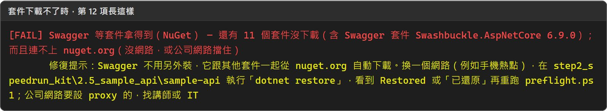
- 換一個網路（例如手機熱點）。
- 在跑 preflight 的同一個終端機（現在在
step0_course_intro），一行貼一次。dotnet restore跑完看到「已還原」或 Restored 就好：cd ..\step2_speedrun_kit\2.5_sample_api\sample-api dotnet restore cd ..\..\..\step0_course_intro .\preflight.ps1 - 寫的是「套件來源清單裡沒有 nuget.org」：貼這一行加回來，再重跑：
dotnet nuget add source https://api.nuget.org/v3/index.json -n nuget.org - 公司網路要走 proxy（代理伺服器）：先問 IT 拿位址和埠號，在同一個終端機貼下面這行（換成你的位址），再照上一點進
sample-api資料夾跑dotnet restore（在step0_course_intro跑會找不到專案）。dotnet 的紅字有NU1301（連不上套件來源），多半就是這個問題。$env:HTTPS_PROXY='http://位址:埠號'
- 帳密登不進去：代表安裝時的密碼不是
12345。貼這一行，它會問密碼：輸入你安裝時設的密碼，就會改成12345。忘了原本的密碼，找講師。這組帳密只限教室練習，不准用在公司正式環境。& "C:\Program Files\PostgreSQL\18\bin\psql.exe" -U postgres -h localhost -c "ALTER USER postgres PASSWORD '12345';" - 一執行就跳「已停用指令碼執行」：先貼這一行，問你要不要變更就打
Y、Enter，再重跑：Set-ExecutionPolicy -Scope CurrentUser RemoteSigned - 還是紅：把整段輸出（連 [PASS] 的行）貼給 AI：
這是工作坊前置檢查 preflight.ps1 的完整輸出，我用 Windows 11。 請說明每個 [FAIL] 的原因，給我可複製的修復指令；不要改工作坊的檔案。 （把整份 preflight 輸出貼在這裡）
- 看過同一句後端需求的兩份程式：一份沒給規矩、一份附了規矩。
- 說得出差別：兩份都寫得很漂亮，差在「每個決定有沒有出處」。
① 打開對照頁 ▶ 看動畫
在終端機一行貼一次（第一行是回到教材資料夾）：
cd ..
start step1_why_harness\COMPARE.htmlmacOS 的指令
cd ..
open step1_why_harness/COMPARE.html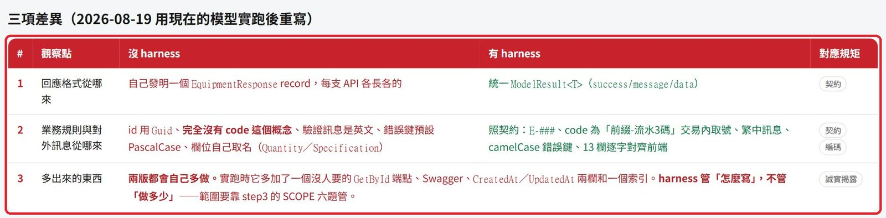
← 手機可左右滑看整張圖 →
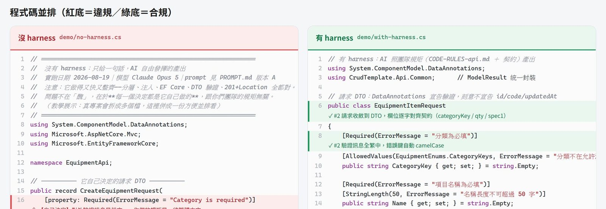
← 手機可左右滑看整張圖 →
| 看哪裡 | 沒給規矩 | 有給規矩 |
|---|---|---|
| 回應包成什麼形狀 | 自己發明一個 | 統一的信封 ModelResult |
| id、編碼、欄位名、訊息 | id 用 Guid（一串隨機碼）、沒有編碼、欄位自己取名（Quantity／Specification）、訊息是英文 | id 是 E-001、有編碼 PW-GEN-001、欄位名跟前端一模一樣、訊息是中文 |
| 多做的東西 | 兩份都會自己多做：規矩管得住「怎麼寫」，管不住「做多少」；範圍要靠 Step 3 的選擇題管 | |
也要說公道話：沒規矩那份自己就做對了很多事（分層、密碼沒寫死、SQL 安全、輸入檢查、例外處理）。現在的 AI 不給規矩也寫得出漂亮的 API。
- 範本 API（人員管理）在你的電腦跑起來；Swagger 查得到 24 筆、查不存在的回 404。
- 49 條測試全綠；psql 直查資料庫也是 24 筆：畫面、API、資料庫三邊對上。
- 知道四份規矩放在哪，看過分層圖。
① 把範本 API 跑起來 ▶ 看動畫
在教材根目錄的終端機，一行貼一次：
cd step2_speedrun_kit\2.5_sample_api\sample-api\src\CrudTemplate.Api
dotnet run --urls http://localhost:5080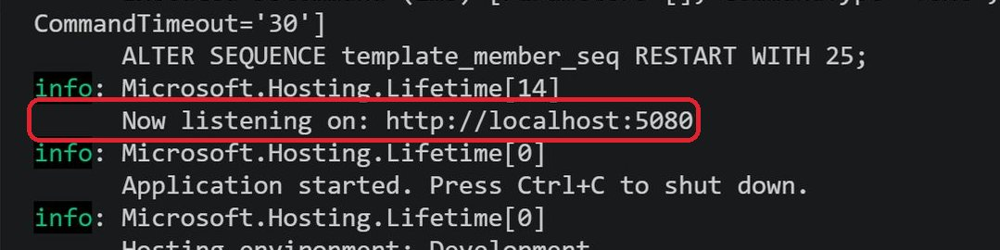
← 手機可左右滑看整張圖 →
Now listening on: http://localhost:5080，API 就起來了。這個終端機先別關。② 用 Swagger 打 API ▶ 看動畫
瀏覽器開 http://localhost:5080/swagger。人員管理有五條路由：
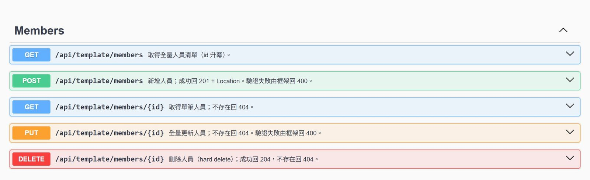
← 手機可左右滑看整張圖 →
- 點第一條「GET 全部」，按 Try it out，再按 Execute。
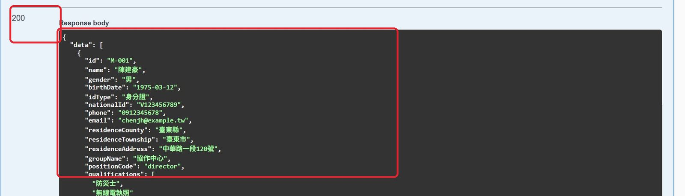
← 手機可左右滑看整張圖 →
data 裡，往下捲一共 24 筆；最下面還有 success、message。這個統一的信封叫 ModelResult。- 展開「GET
/api/template/members/{id}」，一樣先按 Try it out，id 欄打M-999（不存在），按 Execute。
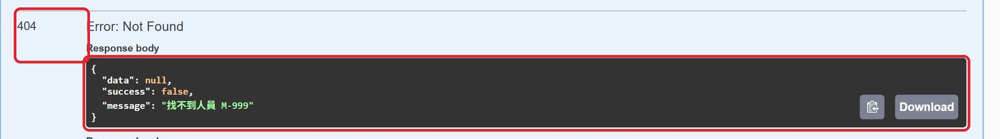
← 手機可左右滑看整張圖 →
③ 跑測試、直查資料庫 ▶ 看動畫
按終端機右上角的「＋」開第二個，一行貼一次：
cd step2_speedrun_kit\2.5_sample_api\sample-api
dotnet test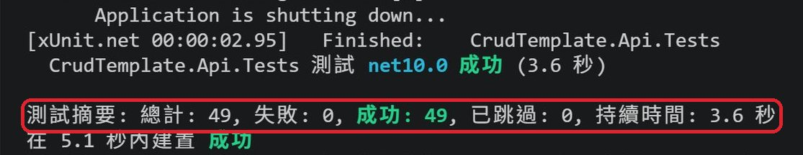
← 手機可左右滑看整張圖 →
再整行貼上這一行，直接查資料表：
$env:PGPASSWORD='12345'; & "C:\Program Files\PostgreSQL\18\bin\psql.exe" -U postgres -h localhost -d ai_crud_template -c "SELECT count(*) FROM template_member;"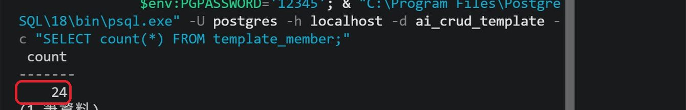
← 手機可左右滑看整張圖 →
④ 四份規矩放在哪 ▶ 看動畫
左邊檔案總管依序點開 step2_speedrun_kit → 2.5_sample_api → sample-api：
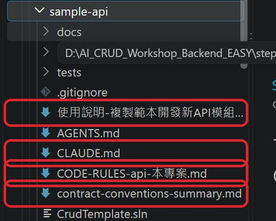
sample-api 最上層這四份 .md 就是規矩（harness）。CLAUDE.md：總綱：用什麼技術、哪些檔不能動、鐵律。你至少要掃過一次，只有四十幾行。CODE-RULES-api-本專案.md：細則。contract-conventions-summary.md：對前端的約定：回應形狀、欄位命名、狀態碼。使用說明-複製範本開發新API模組.md：怎麼複製範本開新模組。旁邊的AGENTS.md只寫「去讀 CLAUDE.md」，給別家 AI 用。
你不用逐條讀懂，那是寫給 AI 讀的。Step 3 複製範本時，四份一起帶過去。規矩寫錯，AI 會照著錯，而且錯得又快又整齊，所以內容要有人負責確認。
⑤ 看分層圖 ▶ 看動畫
在第二個終端機（目前在 sample-api）貼：
start ..\..\2.4_architecture_db\ARCHITECTURE_DB.html網頁最上面是「① 請求的一生」，先看它分三個框：
- 藍框＝前端（Nuxt 程式）：瀏覽器和轉接站 devProxy。
- 紫框＝後端 API（.NET 程式，埠 5080）：Controller、Service、EF Core 三格合起來，就是 API。EF Core 是翻譯員，把程式裡的資料翻成資料庫指令。
- 灰框＝資料庫（PostgreSQL）。
前端和後端 API 是兩個分開的程式，中間用 HTTP 溝通。像餐廳：前端是外場，API 是廚房，外場只能從出菜口把點單遞進廚房。
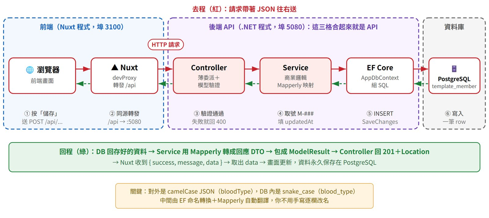
← 手機可左右滑看整張圖 →
再往下捲到「② 分層架構」。這張圖畫的幾層，全都在紫框（後端 API）裡面。
開得了的話也看「POST 循序」那張：一筆新增從進來到存進資料庫，經過哪幾層。
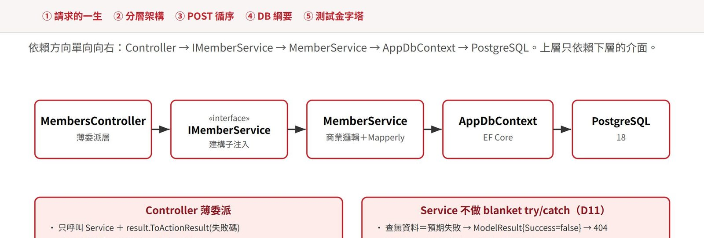
← 手機可左右滑看整張圖 →
範本的資料夾各做什麼
| 資料夾 | 一句話 |
|---|---|
Controllers | 收件、回狀態碼，不寫商業邏輯 |
Services | 商業邏輯都在這：取號、產 id、查無回失敗 |
Data | 資料庫設定、種子資料、migration（改資料表的腳本） |
Entities | 對應資料表的類別 |
Models | 對外的請求、回應長什麼樣；檢查規則寫在這 |
Common | 全部模組共用（ModelResult、錯誤處理）——複製新模組時一個字都不改 |
- 看完一定要停掉 API：回跑
dotnet run的終端機按 Ctrl+C。沒停的話，Step 3 一開就撞 5080。 - 5080 被占用：多半是上一個 API 還在跑，回那個終端機按 Ctrl+C。不確定是誰在用，就不要關它，改用
--urls http://localhost:5081，Swagger 網址跟著改。 - Swagger 打不開：照順序查。
- 跑
dotnet run的終端機，有沒有Now listening on: http://localhost:5080？沒有：API 沒起來，往上找紅字。 - 紅字裡有
NU1101或NU1301（找不到套件、連不上來源）：Swagger 套件沒下載到。換一個網路，在同一個終端機（現在在CrudTemplate.Api）一行貼一次：
還是不行，看 Step 0「卡住時」第 12 項（proxy、套件來源）。cd ..\.. dotnet restore cd src\CrudTemplate.Api dotnet run --urls http://localhost:5080 - 網址要打完整：
http://localhost:5080/swagger，最後是swagger。 - 頁面寫 404：Swagger 只在「開發模式」出現。用
dotnet run開就是開發模式；直接點.exe開的不是。
- 跑
- dotnet 噴一大串紅字：從你打的指令那一行開始整段複製，貼給 AI，請它說明原因、給修復指令。同一個錯誤修兩次還不行，找講師。
- 只給 AI 一份 PRD，它先用選擇題問你沒寫清楚的地方，你拍板。
- 它先交文件和圖，你看過才說「開工」。
- 三路驗收：Swagger 狀態碼對、測試全綠、psql 查得到 24 列。
順序一句話：PRD → AI 出選擇題 → 你拍板 → AI 交文件和圖 → 你核過 → 說「開工」→ AI 寫程式 → 三路驗收。這就是 SDD：先文件、再程式。
⓪ 準備工作區：複製範本 ▶ 看動畫
按終端機右上角的「＋」開一個新的，開頭是教材根目錄（…\AI_CRUD_Workshop_Backend_EASY>）就對了。整段複製、貼上；出現 >> 再按一次 Enter：
# 1. 複製範本 API 成你的工作專案（四份規矩在範本根目錄，會一起帶走）
Copy-Item -Recurse step2_speedrun_kit\2.5_sample_api\sample-api step3_new_module\my-equipment-api
# 2. 把 PRD 和最小樣板放進專案（AI 才讀得到需求和交件格式）——不複製任何答案檔
Copy-Item step3_new_module\PRD-中心裝備物資-後端.md step3_new_module\my-equipment-api\
Copy-Item step3_new_module\SRS-設計文件-最小樣板.md step3_new_module\my-equipment-api\
# 3. 進入專案資料夾
cd step3_new_module\my-equipment-api回家重做：先把舊的 my-equipment-api 改名（例如 my-equipment-api-old），再貼這段。舊的還在時重貼，範本會被複製到它裡面。
資料庫也要清：上次的資料表還在 ai_crud_equipment 裡，新的 AI 建資料表時會撞到「已經存在」。這個庫只放課堂練習資料，API 先停掉，再貼這一行刪掉它（只刪這一個，名字看清楚，別的資料庫不要動）：
$env:PGPASSWORD='12345'; & "C:\Program Files\PostgreSQL\18\bin\psql.exe" -U postgres -h localhost -d postgres -c "DROP DATABASE IF EXISTS ai_crud_equipment;"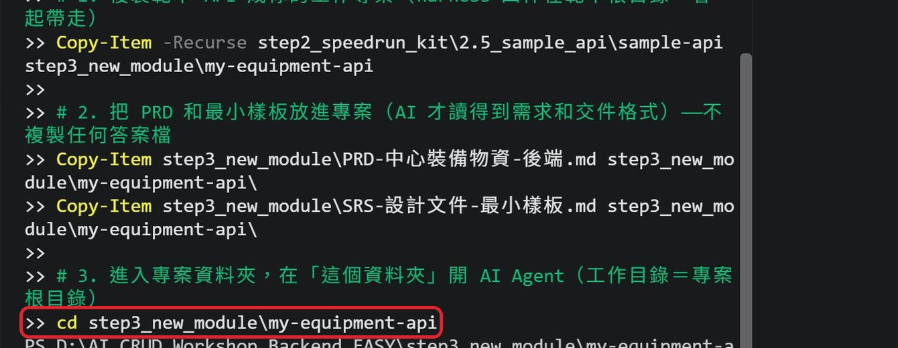
…\my-equipment-api> 就對了。參考解（solution-api）、參考文件（docs/）、講師的答案（instructor/）都不會進工作區。① 打開新專案、讀 PRD ▶ 看動畫
- 選單「檔案」→「開啟資料夾」，選
step3_new_module\my-equipment-api。視窗會整個重開，這是正常的。原本的終端機會不見：選單「終端機」→「新增終端」再開一個，開頭是…\my-equipment-api>就對了。
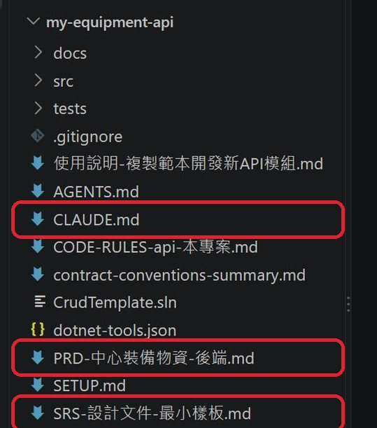
- 點
PRD-中心裝備物資-後端.md，按 Ctrl+Shift+V 看預覽。
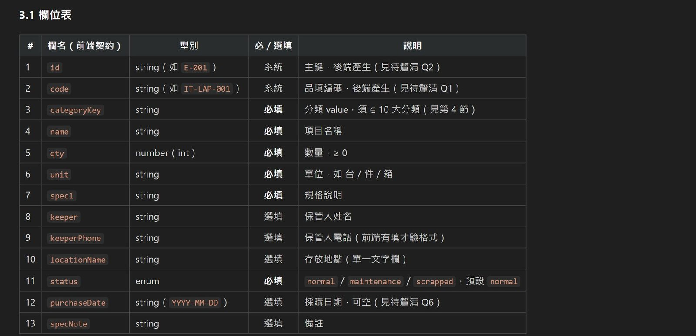
← 手機可左右滑看整張圖 →
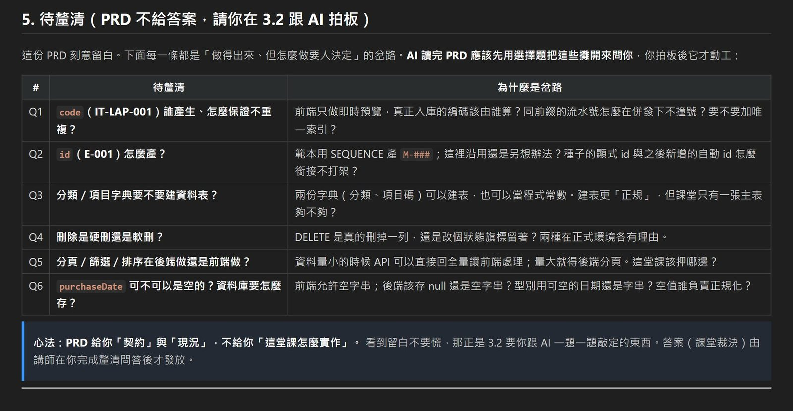
← 手機可左右滑看整張圖 →
② 打開 Claude Code、選模型 ▶ 看動畫
- 點 VS Code 右下角的「Claude Code」，打開對話。右下角沒有它，代表還沒裝好或還沒登入，舉手找講師。
- 點輸入框下面的模型名稱，選 Opus 5.5；同一個選單裡的 Effort 拉到 High（effort＝AI 想多深）。寫文件要想得深。
- 輸入框右下角的核准模式切成 Auto。不然它每跑一個指令都會停下來問你。
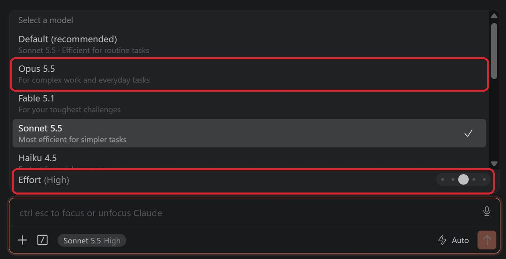
③ 貼起手 prompt ▶ 看動畫
這段貼在 Claude Code 的對話輸入框，按送出（step3_new_module/PROMPTS.md 也有同一段）：
用 .NET CRUD 範本（人員 API）做新模組「中心裝備物資」的後端 API，走規格驅動開發（SDD）：先文件，再程式。
先讀 CLAUDE.md、AGENTS.md 指到的 harness 規則檔，和 PRD-中心裝備物資-後端.md，先不要寫程式。
照 SRS-設計文件-最小樣板.md 的「釐清規矩」，把 PRD 第 5 節的待釐清點和其他沒寫清楚的地方，用選擇題逐題問我，每題標出建議和一句理由。
我拍板後，照 SRS-設計文件-最小樣板.md 產出 SRS-delta、設計文件-delta、UML 圖和任務清單；等我說「開工」才寫程式，每做完一個回報一行。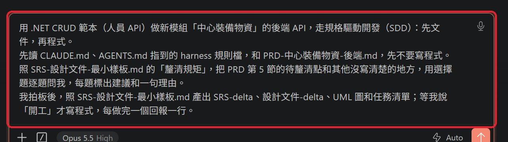
← 手機可左右滑看整張圖 →
④ 一題一題拍板 ▶ 看動畫
讀完它先出選擇題，一批四題，上面的分頁可以切換。每題都有標「建議」的選項和一句理由。
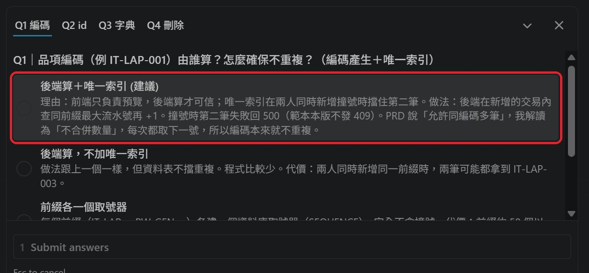
← 手機可左右滑看整張圖 →
- 先自己想一輪再選：每題看 AI 寫的理由和代價。看不懂就選它標「建議」的。
- 一批答完，按最下面的 Submit answers（送出答案），它才會出下一批。
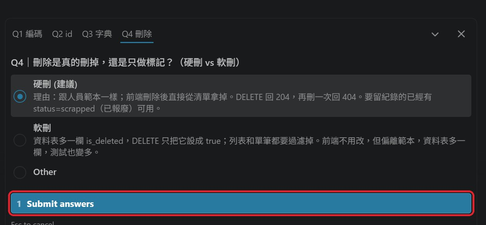
← 手機可左右滑看整張圖 →
它問的題目有兩種：PRD 第 5 節寫好的六題，和它照「釐清規矩」自己找到的缺口（追加題）。實拍這次一共 16 題、分四批。你的題目字句和題數會不一樣，照意思對到表就好：
| # | AI 會問（大意） | 實拍那次選了 |
|---|---|---|
| PRD 第 5 節的六題 | ||
| Q1 | 編碼（如 IT-LAP-001）誰產生？怎麼保證不重複？ | 後端算，再加「不能重複」的檢查（建議） |
| Q2 | id（如 E-001）怎麼產？ | 沿用範本的取號器（建議） |
| Q3 | 分類、項目要不要建資料表？ | 不建表，寫成程式常數（建議） |
| Q4 | 刪除是真的刪掉，還是做記號？ | 真的刪掉（建議） |
| Q5 | 分頁、篩選、排序在後端還是前端做？ | 後端回全部，前端處理（建議） |
| Q6 | 採購日期可以空嗎？資料庫存什麼？ | 可以空，存「沒有值」（建議） |
| 追加題：它自己找到的缺口 | ||
| Q7 | 保管人要存「人員編號」，還是存「姓名、電話文字」？ | 存文字（建議） |
| Q8 | 選填的欄位沒填，存什麼？ | 存「沒有值」（建議） |
| Q9 | 文字欄最多幾個字？ | 一般上限，例如名稱 50 字（建議） |
| Q10 | 數量有沒有上限？ | 不設上限（沒選建議） |
| Q11 | 品名一定要是那個分類清單裡的嗎？ | 不驗（沒選建議） |
| Q12 | 修改時改了分類或品名，編碼怎麼辦？ | 前綴變了才重算（建議） |
| Q13 | 「採購日期不可晚於今天」後端也要驗嗎？ | 要驗（建議） |
| Q14 | 保管人電話的格式，後端也要驗嗎？ | 照前端規則驗，有填才驗（建議） |
| Q15 | 新增或修改時沒帶狀態，怎麼辦？ | 當必填，回 400（建議） |
| Q16 | 同一個前綴的流水號用到 999 之後呢？ | 自然變 4 位數：999 之後是 1000（建議） |
Q7 保管人：存編號，還是存文字？ ▶ 看動畫
這題 PRD 沒寫，是它照「釐清規矩」第一條自己找到的：欄位指向別的資料（例如人）時，要問存「編號」還是存「文字」。
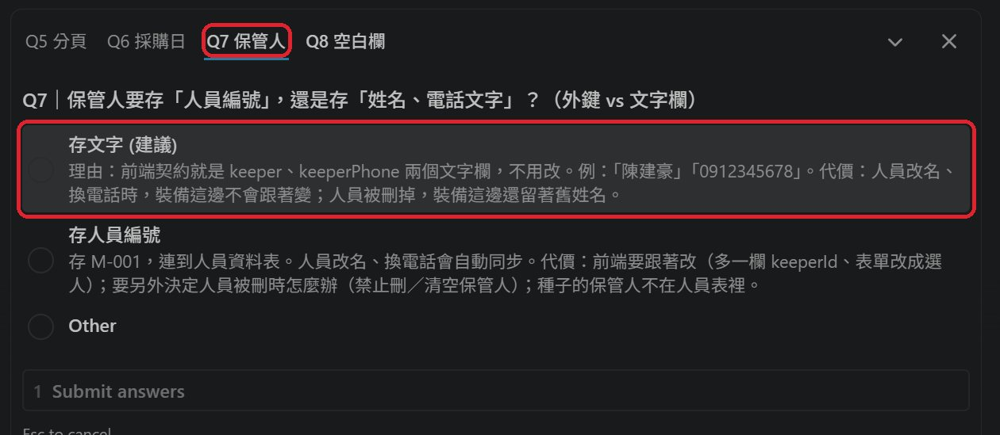
← 手機可左右滑看整張圖 →
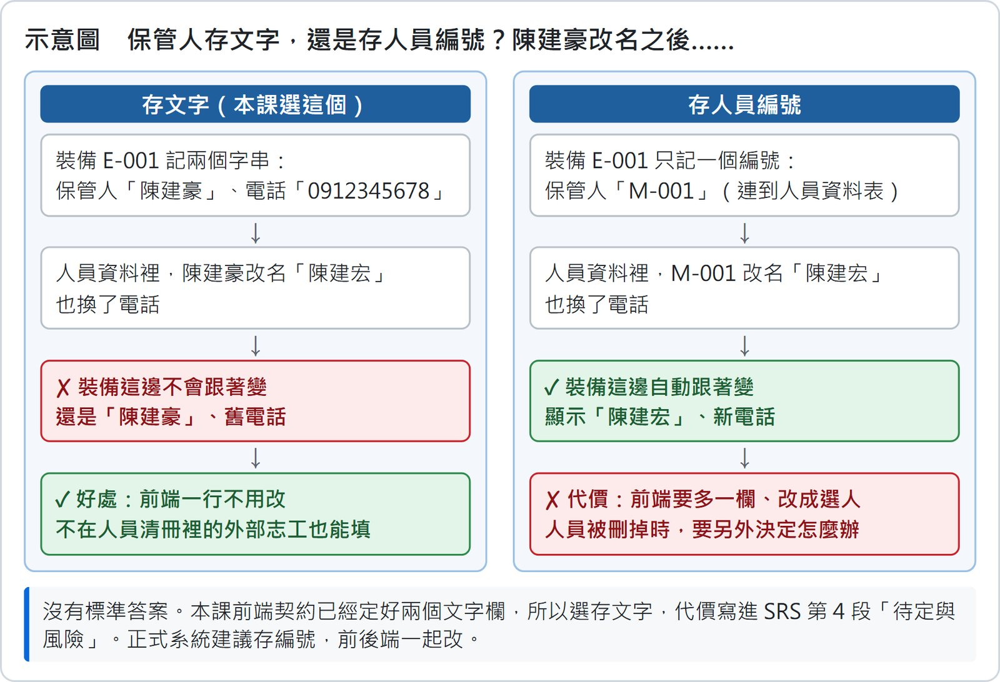
- 存文字：裝備自己記兩段文字：姓名「陳建豪」、電話「0912345678」。人員改名，裝備這邊不會跟著變。好處是前端一行都不用改，外部志工也能填。
- 存編號：裝備只記
M-001，名字、電話從人員資料帶出來，改名會自動跟著變。代價是前端要改成「從人員清單挑」。 - 本課選存文字：PRD 說前端一行都不改，前端契約就是兩個文字欄。它把代價寫進了 SRS-delta 第 4 段「待定與風險」第 7 條。正式系統建議存編號，前後端一起改。
沒選建議的，要補自己的理由 ▶ 看動畫
Q10、Q11 實拍時沒選它建議的。它在文件裡留了一句「請補你的理由」。在同一個對話打兩句理由，它就寫進 SRS-delta 第 1 段：
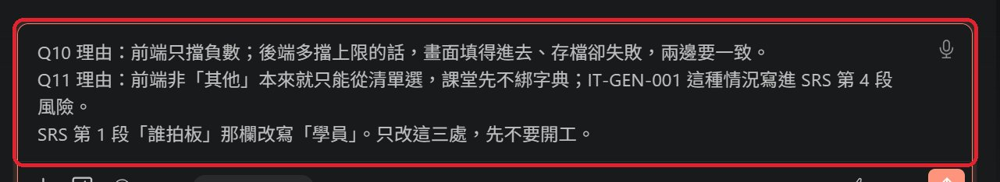
← 手機可左右滑看整張圖 →
它也可能追加一題「範本原有的人員模組要保留嗎？」：選保留（人員的程式、49 條測試、舊的 migration 都不動，新模組只用「新增」的 migration）。
停，先不要寫程式、不要建檔案。先照 SRS-設計文件-最小樣板.md 的「釐清規矩」，用選擇題逐題問我，我拍板後再產出文件和任務清單，等我說「開工」。它想自己決定分類要不要建表、想改範本的正本文件、測試紅了想刪測試：都叫它停，改成用選擇題問你。
⑤ 先看文件，再說開工 ▶ 看動畫
拍板後，它在 docs 資料夾交四個檔：SRS-delta、設計文件-delta、圖、任務清單。程式一行都還沒寫。它停下來問下一步：選「我先核文件」。問要不要開 Chrome，選 No，跟它說文件你自己看。
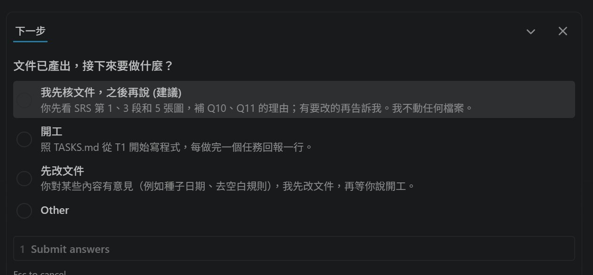
← 手機可左右滑看整張圖 →
- SRS-delta（按 Ctrl+Shift+V 看預覽）：第 1 段每題一列：問題、裁決、理由、誰拍板。第 2 段 PRD 每一項做在哪；第 3 段這一版不做什麼。這三段你一定要核。
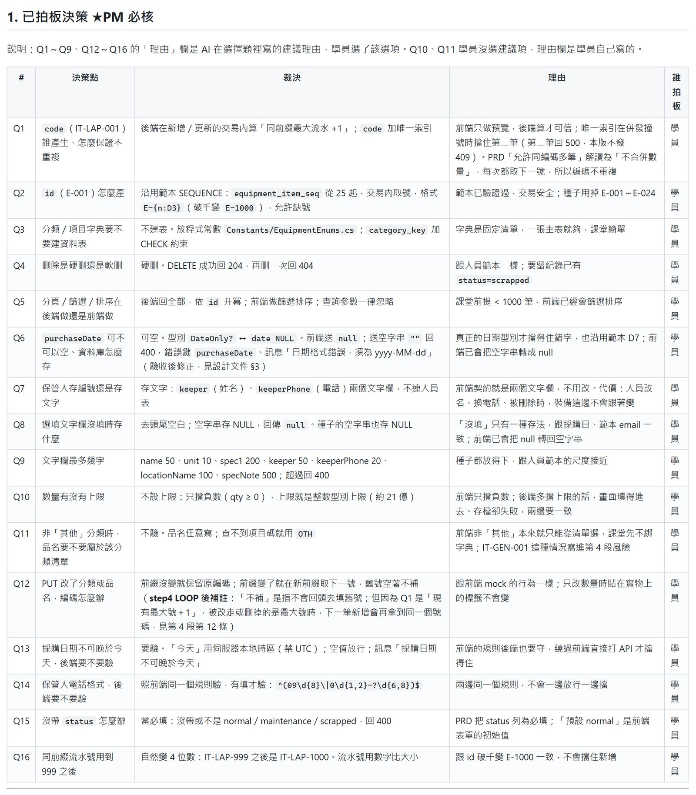
← 手機可左右滑看整張圖 →
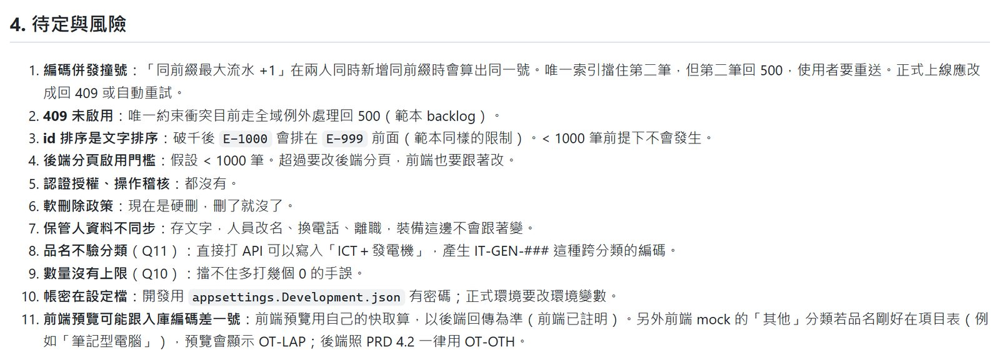
← 手機可左右滑看整張圖 →
⑥ 看設計文件和五張圖 ▶ 看動畫
- 設計文件-delta：第 1 段哪一層新增哪些檔、哪些只加不改，
Common和人員模組完全不動。最後一段「遵守規矩的證據」寫完程式才會填。
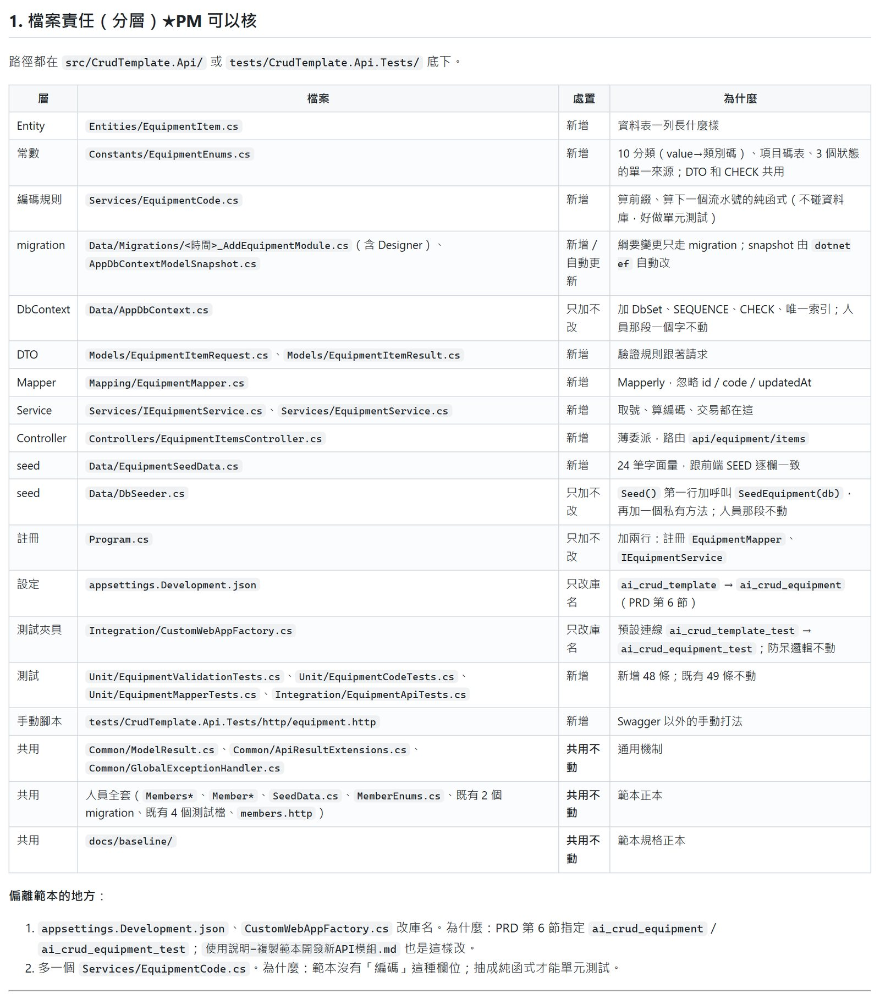
← 手機可左右滑看整張圖 →
- 圖：用瀏覽器開。在
my-equipment-api的終端機打：
每張圖上面寫「怎麼看」，下面一題「看完你要答得出來」。每一張都要看懂，下面一張一張講。圖太小就點圖開原圖。start docs\DIAGRAMS-裝備物資API.html
打開只看到一堆文字、沒有圖：這頁要連網（cdn.jsdelivr.net）才畫得出圖。換個網路再開；公司擋住的話，請 AI「把 mermaid 下載到 docs 資料夾，改成讀本機的檔」。
下面的圖是實拍那次 Step 4 LOOP 之後的版本：LOOP 修好的東西會標「step4 LOOP 後」。你在這一步看到的圖不會有這些標記。
圖① 分層架構圖：一筆請求經過哪幾層 ▶ 看動畫
一句話：一筆請求從前端進來，經過哪幾層才到資料庫；哪些檔是新寫的、哪些只加幾行、哪些完全不動。
怎麼看：
- 實線箭頭：請求走的方向。虛線箭頭：「被誰用到」。
- 顏色：綠色＝新增的檔；黃色＝只加幾行（或只改資料庫名稱）；灰色＝共用，一個字都不動。
- 框裡先寫中文的角色，括號裡是程式檔名，給工程師找檔案用。
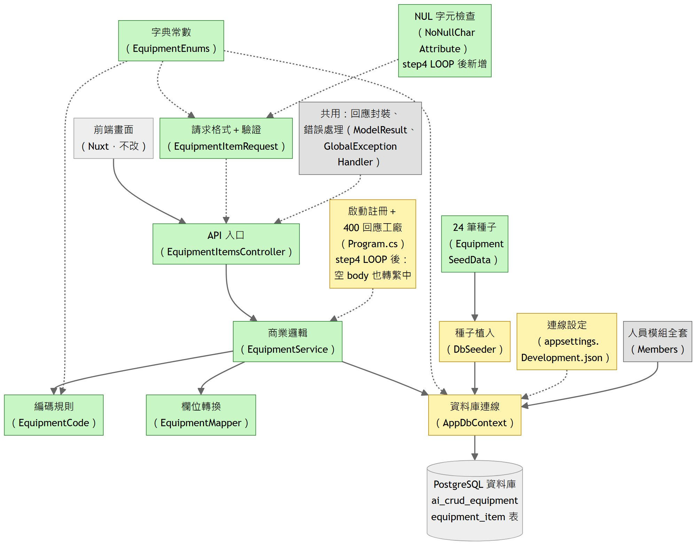
← 圖很寬，可以左右捲 →
圖裡有什麼：
- 請求路線：前端畫面 → API 入口（Controller）→ 商業邏輯（Service）→ 資料庫連線 → PostgreSQL。
- 商業邏輯旁邊有兩個幫手：編碼規則（算
IT-LAP-003）、欄位轉換。 - 綠色是新檔：API 入口、商業邏輯、編碼規則、欄位轉換、請求格式與驗證、字典常數、24 筆種子。右上角的「NUL 字元檢查」是 Step 4 LOOP 修好後才加的，標了「step4 LOOP 後新增」。
- 黃色只加幾行：資料庫連線、種子植入、連線設定、啟動註冊。啟動註冊（Program.cs）也是「產生 400 錯誤回應」的地方，Step 3 和 Step 4 修訊息時都改過它。
- 灰色：前端畫面（不是這個專案的檔，不改）、回應封裝和錯誤處理、人員模組全套。
看完你要答得出來：人員模組的檔案，這次有沒有被改到？
對答案
沒有，人員模組是灰色（共用不動）。注意：後面驗收修小落差時，AI 改到黃色的啟動註冊（Program.cs）原本的一段，它把這件事寫進了設計文件。動到共用的檔，一定要留紀錄。
圖② 資料表圖（ER 圖）：資料表長什麼樣 ▶ 看動畫
一句話：只有一張資料表 equipment_item；分類、項目碼不建表，是程式裡的常數。
怎麼看：
- 每個框列出欄位，一行一個：型別、欄名、說明。
- PK＝主鍵（每一筆獨一無二的編號）；UK＝不能重複。
- 只有
equipment_item是真的資料表。equipment_item_seq是資料庫的取號器；CATEGORY_CONST、ITEM_CODE_CONST是程式常數。連線上的字說明兩邊的關係。
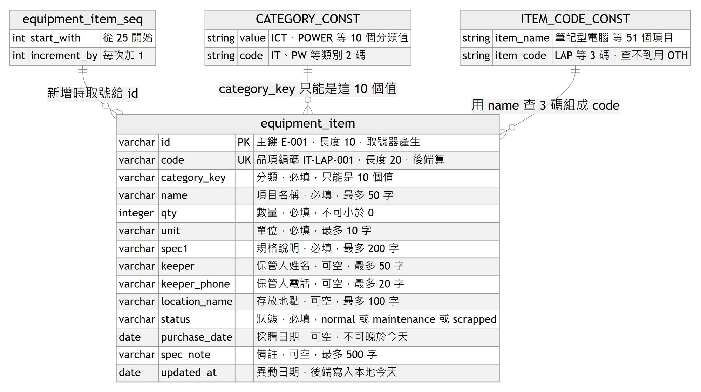
← 圖很寬，可以左右捲 →
圖裡有什麼：
- 14 欄：PRD 的 13 欄，加一個異動日期。每欄寫了必填還是可空、最多幾個字：就是你在 Q9 拍板的字數。
- 保管人、保管人電話是兩個文字欄：就是 Q7「存文字」。
- 取號器從 25 開始：種子用掉 E-001～E-024（Q2）。
- 分類 10 個值、項目碼 51 個，是程式常數（Q3）。程式常數像印在菜單上的品項，資料表像寫在白板上的品項；印好的菜單要改，就得重印。
看完你要答得出來：分類清單要加一個新分類，要改哪裡？
對答案
主要改程式裡的常數（分類不是資料表）。但資料表上有一條「分類只能是這 10 個值」的檢查，也要跟著改，所以還要再出一支 migration（改資料表的腳本）。
圖③ 新增一筆的循序圖：id 和編碼在哪一步產生 ▶ 看動畫
一句話：新增一筆時，id 和編碼在哪一步、由誰產生；驗證失敗和撞號時各回什麼。
怎麼看：
- 最上面一排是四個角色：前端畫面、API 入口、商業邏輯、資料庫。由上往下是時間順序，圓圈數字是第幾步。
- 實線箭頭：叫對方做事。虛線箭頭：回覆。
alt框是分岔：框裡用橫線分成兩種情況，只會走其中一條。- 交易：一組動作要嘛全部成功，要嘛全部取消。第 5 步開交易、第 15 步提交，中間失敗就全部取消，不會留下半筆資料。比喻：ATM 轉帳。扣你的錢、加對方的錢，要嘛都做、要嘛都不做；不會只扣錢沒入帳。
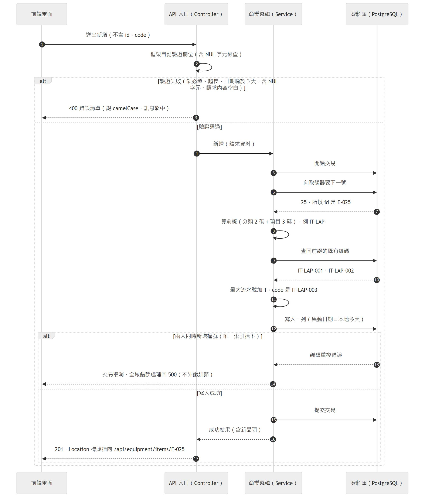
← 圖很寬，可以左右捲 →
圖裡有什麼：
- 第 1～3 步：前端送新增（不含 id、code）。欄位驗證沒過，直接回 400，訊息繁中。
- 第 5～7 步：開交易，向取號器要下一號，得到
E-025。 - 第 8～11 步：算前綴
IT-LAP-，查同前綴已經有的編碼，最大流水號加 1，得到IT-LAP-003。 - 第 12 步以後：寫入。兩人同時新增撞號，就取消、回 500；成功就提交，回 201 和新資料的網址。
看完你要答得出來：一筆新增，編碼是在哪一步算出來的？算的時候在不在交易裡？
對答案
第 11 步（最大流水號加 1）。在交易裡：第 5 步開交易、第 15 步才提交。
圖④ 狀態碼圖：每條路由會回什麼 ▶ 看動畫
一句話：五條路由各會回哪些狀態碼，哪些回應包在統一的信封（ModelResult）裡。
怎麼看：
- 左邊是路由，右邊是狀態碼。箭頭表示「這條路由可能回這個碼」。
- 顏色：藍色＝包在信封裡（有 success、message、data）；橘色＝不包：204 沒有內容，400、500 用框架的錯誤格式。
- 虛線指到 500：正常不會發生，只有資料庫斷線、撞號這類意外。
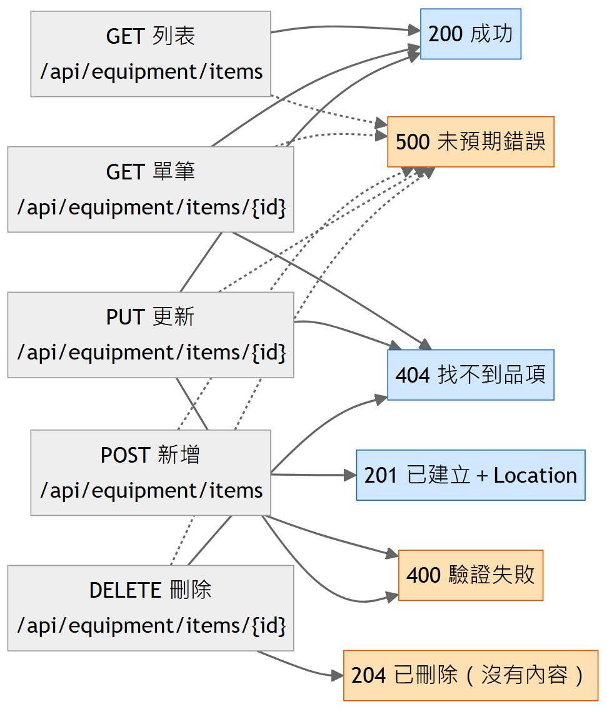
圖裡有什麼：箭頭交叉比較難追，看這張打勾表（文件裡圖的下面也有）：
| 路由 | 200 | 201 | 204 | 400 | 404 | 500 |
|---|---|---|---|---|---|---|
| GET 查全部 | ✅ | 意外 | ||||
| GET 查一筆 | ✅ | ✅ | 意外 | |||
| POST 新增 | ✅ | ✅ | 意外 | |||
| PUT 修改 | ✅ | ✅ | ✅ | 意外 | ||
| DELETE 刪除 | ✅ | ✅ | 意外 |
藍色（包在信封裡）：200、201、404。橘色（不包）：204、400、500。
看完你要答得出來：刪除成功時，前端會收到信封（ModelResult）嗎？
對答案
不會。刪除成功回 204，什麼內容都沒有。
圖⑤ 修改時編碼怎麼處理（流程圖） ▶ 看動畫
一句話：修改一筆時，什麼情況編碼不變、什麼情況重新取號（就是 Q12 的拍板）。
怎麼看：菱形是判斷，箭頭上的字是判斷結果；方框是動作。從上往下走。
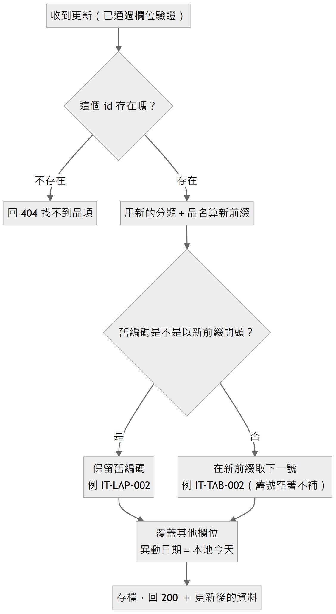
圖裡有什麼：
- 先問 id 存不存在：不存在回 404。
- 存在：用新的分類和品名算新前綴，再問「舊編碼是不是這個前綴開頭」。
- 是：保留舊編碼。不是：在新前綴取下一號，舊號空著不補。
- 例子：
IT-LAP-002（筆電）只改數量 → 還是IT-LAP-002；品名改成平板 → 變成IT-TAB-002。 - 注意：「舊號空著不補」只保證不回頭填中間的空號。Step 4 的分身抓到：最大號那一筆被改走，下一台新的又會拿到同一號（見 Step 4 ⑥ 的 Q3）。
看完你要答得出來：只改保管人電話，編碼會不會變？
對答案
不會。分類和品名沒變，前綴就沒變，保留舊編碼。
看不清、看不懂的圖，就請它重畫 ▶ 看動畫。實拍那次，圖① 原本太寬，要左右捲很久才看到資料庫。一句話「改成由上往下排，寬度不超過 1400px，顏色和內容不變」，它就重畫了：
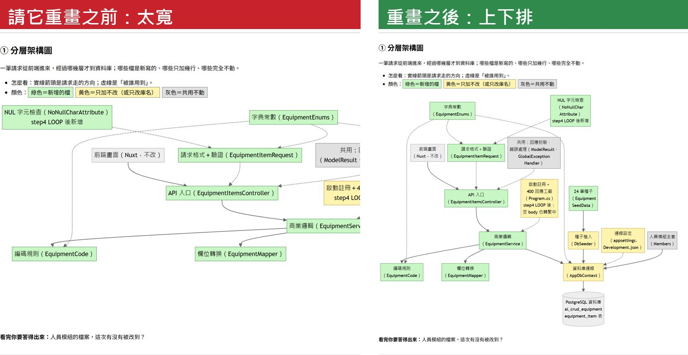
← 手機可左右滑看整張圖 →
文件的最低門檻寫在 SRS-設計文件-最小樣板.md：SRS-delta 四段、設計文件-delta 四段、圖至少四張，缺一樣就退回。想看填好的樣子，step3_new_module/docs/ 有參考文件——先自己做，卡住再開。
⑦ 換 Sonnet、說開工 ▶ 看動畫
- 看任務清單：打開
docs\TASKS.md，每一項都小到能單獨驗收；你拍板的每一題，都對得到一項任務。最上面寫了預期測試總數。 - 把模型換成 Sonnet 5.5（有規矩和範本，寫程式用便宜的就夠）。
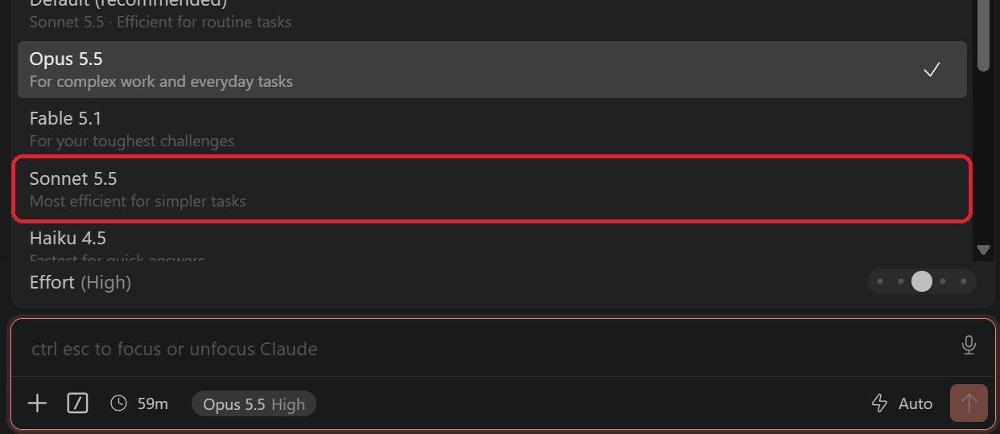
← 手機可左右滑看整張圖 →
- 在輸入框打「開工」送出。它照任務清單一項一項做，每做完一項回報一行。實拍那次大約 7 分鐘。
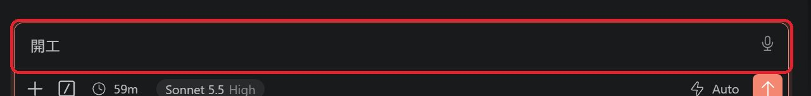
← 手機可左右滑看整張圖 →
做完它會回報：測試幾條全綠、build（把程式碼組成能跑的程式）有沒有警告，還會列「跟文件原本寫的不同，已改文件」。實拍那次是 97 條全綠、0 警告，改了文件的 5 個地方。程式跟文件對得上，才算做完：這就是 SDD。
⑧ 三路驗收：先把你的 API 開起來 ▶ 看動畫
AI 說的不算，你親眼看到才算。在 my-equipment-api 的終端機，一行貼一次（AI 已經幫你開著 API 的話，跳過這一步，直接開 Swagger）：
cd src\CrudTemplate.Api
dotnet run --urls http://localhost:5080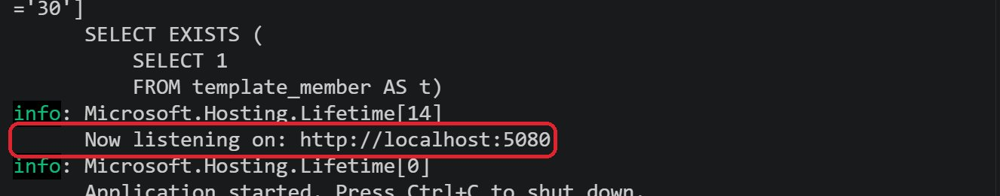
← 手機可左右滑看整張圖 →
Now listening on: http://localhost:5080，你的 API 就起來了。這個終端機先別關。第一路：Swagger。瀏覽器開 http://localhost:5080/swagger，這次多了裝備物資五條路由：
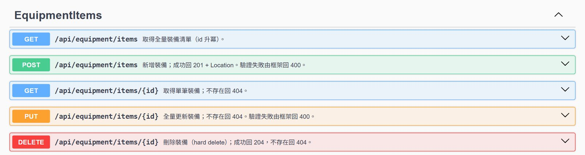
← 手機可左右滑看整張圖 →
| 照順序打 | 看到這樣就對了 |
|---|---|
| GET 全部 | 200，24 筆 |
GET 一筆：E-001，再試 E-999 | E-001 回 200；E-999 回 404「找不到品項 E-999」 |
| POST 新增一筆（Try it out，把 Request body 整段換成下面那段，Execute） | 201；回應裡的 id、code 是後端自己產生的。記下這個 id（例如 E-025） |
PUT 修改你剛新增的那一筆：id 欄填剛記下的 id；body 用同一段，把 qty 改成 2 | 200；改一個不存在的 id 回 404 |
| DELETE 刪掉你剛新增的那一筆 | 204；再刪一次回 404 |
POST、PUT 的 Request body：Swagger 原本的範例欄位都是 "string"，直接送會回 400。整段換成這段（只填 6 個必填欄位）：
{
"categoryKey": "POWER",
"name": "發電機",
"qty": 1,
"unit": "台",
"spec1": "驗收用 汽油 3kW",
"status": "normal"
}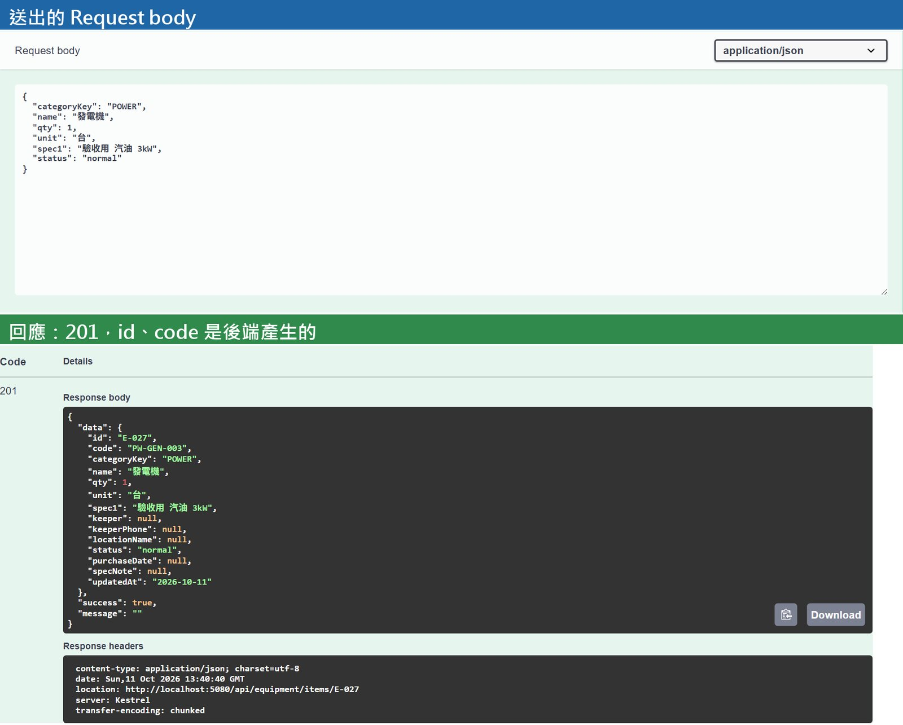
id、code（PW-GEN-003）是後端算的；沒填的選填欄位回 null（沒有值）。實拍這筆 id 是 E-027：之前試送過、刪掉過，取號器往後數了。你的號碼不一樣是正常的。⑨ 三路驗收：測試和資料庫 ▶ 看動畫
第二路：測試。按終端機右上角的「＋」開第二個（開頭是 …\my-equipment-api>），貼：
dotnet test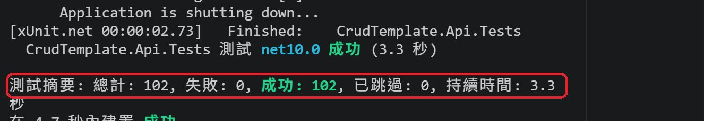
← 手機可左右滑看整張圖 →
第三路：psql 直查資料庫。這次資料庫是 ai_crud_equipment：
$env:PGPASSWORD='12345'; & "C:\Program Files\PostgreSQL\18\bin\psql.exe" -U postgres -h localhost -p 5432 -d ai_crud_equipment -c "SELECT count(*) FROM equipment_item;"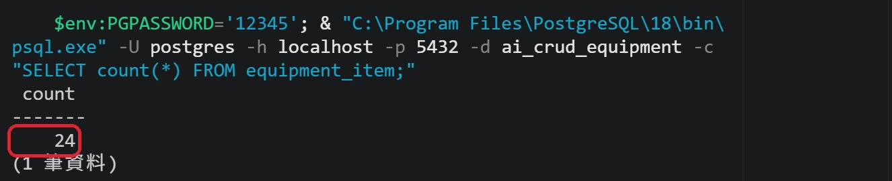
← 手機可左右滑看整張圖 →
ai_crud_equipment。⑩ 有小落差：看到什麼、期望什麼、只改這個 ▶ 看動畫
驗收一定會有小落差。實拍這次是採購日期送空字串。你也可以試一次：回 Swagger 的 POST，在 body 的 "status": "normal" 後面加一個逗號，下一行加 "purchaseDate": ""，按 Execute。
回 400 是對的（Q6 拍板「送空字串回 400」），但錯誤訊息是英文、鍵名多了 $.，還多一條 request。契約要求：鍵名（錯誤清單裡指出「哪一欄錯」的名字）要跟前端的欄位名一模一樣，例如 purchaseDate（第一個字小寫，這種寫法叫 camelCase）；訊息要中文。前端才接得起來。
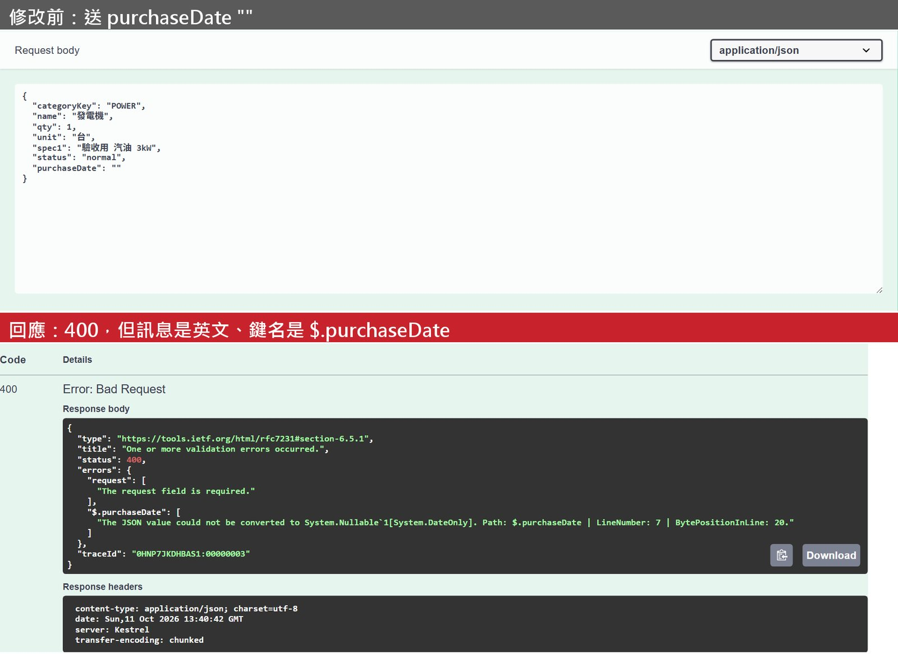
$.purchaseDate，訊息是一長串英文，還多一條 request。- 先停 API：回跑
dotnet run的終端機按 Ctrl+C。API 開著的話，它改完程式會 build 不過（檔案被占住）。 - 在 Claude Code 打一句：看到什麼、期望什麼、只改這個。實拍那次打的是：
驗收看到：POST 的 purchaseDate 送空字串 ""，回 400 是對的，但錯誤訊息是英文，鍵名是 $.purchaseDate，還多一條 request。 期望：跟其他 400 一樣，鍵名 purchaseDate、訊息繁中。數量送成文字也是同一個問題。只改這個。 - 它改好會回報：改了哪個檔、測試多了幾條，還附修正前後的對照表。實拍那次大約 3 分鐘：
| 送出的內容 | 修正前 | 修正後 |
|---|---|---|
purchaseDate: "" | $.purchaseDate＋英文＋request | purchaseDate：日期格式錯誤，須為 yyyy-MM-dd |
qty 送文字或小數 | $.qty＋英文＋request | qty：須為整數 |
| 整份 JSON 壞掉 | $＋英文＋request | $：請求內容不是合法的 JSON |
第一列下面有截圖；後兩列是 AI 回報的對照，想自己看，就在 Swagger 把 qty 改成 "abc" 或 1.5 送一次。
- 重跑
dotnet run（它有時會自己把 API 停掉；終端機看到shutting down就重跑），再送一次同一段：
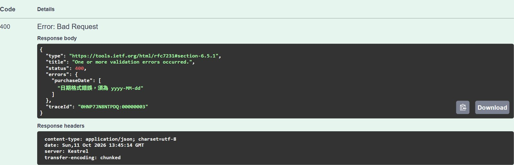
purchaseDate，訊息是中文「日期格式錯誤，須為 yyyy-MM-dd」，多的那條不見了。- 它改的是共用的
Program.cs：所有 400 都從這裡出，所以人員範本也一起變好（送birthDate: ""也變中文）。這個檔原本標「只加不改」，它把「這次改了既有那段」寫進了設計文件。動到共用的檔，一定要留紀錄。 - 對了再講下一件。同一件事講兩次還改不好，換個說法重講，不要一直盧。
- 全部沒問題，打「驗收通過」送出。
- 進 Step 4 之前，回跑
dotnet run的終端機按 Ctrl+C，把 API 停掉。
- 貼一個 prompt，AI 把你自己的
my-equipment-api修到 6 條全鏈路測試全部通過，再叫分身挑錯。 - 看懂它交的報告；自己新增一筆、按 F5，還在。
- 看懂前後端規則要一致：後端擋下的，前端也要先擋、擋不到的也要接得住（⑧）。
- 記住兩條鐵律：同一問題修兩次沒好就停；不准改測試。
LOOP 一句話：先給 AI 一套會亮紅綠燈的驗收標準，再叫它自己修到全綠。這堂課的驗收標準是 6 條全鏈路測試（E2E）：程式自己開瀏覽器，從畫面一路打到資料庫。教材已經寫好，你不用寫。
- AI 把你的 API 和前端開起來 → 跑 6 條測試。
- 有紅燈：自己找原因（API？資料庫？環境？測試本身？）、修好、再跑。
- 全綠：叫出子代理挑錯，先用 HTTP 真的打 API，再開瀏覽器截圖。App 的問題修掉；要動你拍板的、測試本身的、前端的，列成選擇題給你。
- 交報告給你驗收。同一個問題修兩次還沒好，就停下來回報。
① 回到教材根目錄、開新對話 ▶ 看動畫
- Step 3 的 API 先按 Ctrl+C 停掉。
- 選單「檔案」→「開啟資料夾」，選回教材最外層的
AI_CRUD_Workshop_Backend_EASY。左邊要同時看得到step3_new_module、step4_loop_e2e。 - 打開 Claude Code，按右上角的加號開新對話。模型選 Sonnet 5.5，核准模式一樣是 Auto。
← 手機可左右滑看整張圖 →
② 貼 LOOP prompt ▶ 看動畫
你是 LOOP 工程師，照 step4_loop_e2e/LOOP-規矩.md 做，自己跑完，中途不要問我。
受測：step3_new_module/my-equipment-api（API）＋ step4_loop_e2e/fullchain-app（前端）。先在背景把兩個都啟動（埠被占就自己換，前端的 API 位址要跟著改），跑 step4_loop_e2e 的 run-e2e，修到 6 條全綠。
全綠後開一個子代理做對抗審查：先用 HTTP 實打 API 的 201／400／404，再用 Playwright 開瀏覽器逐頁截圖，對照 PRD 和契約挑問題，也挑測試的假綠。
最後照規矩交 LOOP-LOG.md、LOOP-REPORT.html、測試報告，並更新 SRS-delta、設計文件-delta 和圖。- 「中途不要問我」：它會一路跑完。需要你決定的事（要不要推翻你拍板的、測試本身有沒有問題、前端的問題），它寫進報告，跑完後在對話裡用選擇題問你。
- 「假綠」：測試亮綠燈，但沒驗到該驗的。像考卷只檢查有沒有寫名字、不看答案：分數好看，卻什麼都沒證明。所以要叫分身專門挑。
- 鐵律、埠被占怎麼辦、要交哪些檔，都寫在
step4_loop_e2e/LOOP-規矩.md，AI 會自己讀。 - 送出後大約 20～30 分鐘。電腦不要讓它睡眠。跳出要不要連你自己的 Chrome，選 No，跟它說「不用連我的瀏覽器，繼續」。（它自己開的測試瀏覽器不一樣，讓它跑。）
③ 它自己起服務、自己跑測試 ▶ 看動畫
它先查埠，再把你的 API 和前端開起來，跑 6 條全鏈路測試。實拍這次，前端預設的 3199 被別的專案占著：它沒有去關別人的程式，自己換成 3200，前端的 API 位址、測試的網址也跟著改，還把這件事寫進報告。
← 手機可左右滑看整張圖 →
實拍那次第 1 輪就 6 條全綠，dotnet test 102 條也全綠。第一輪可能全綠，也可能有紅燈，兩種都正常。有紅燈，它會先留下「修改前」的截圖，再判因、修、再跑。
④ 全綠之後：子代理挑錯 ▶ 看動畫
← 手機可左右滑看整張圖 →
子代理做三件事：用 HTTP 真的打 API 104 次（合法的、缺欄位的、超長的、壞掉的 JSON 都打）；開瀏覽器一頁一頁截圖；讀全部程式和測試。實拍那次挑到 11 條：修了 2 條，9 條交給你裁決（動到你拍板的、前端的、測試的，規矩都不准它自己改）。9 條整理成 8 題：3 條測試的問題併成一題，另外多一題問「修好的 2 條要不要留」。
| 你看到的 | 這是什麼 | 你要做的 |
|---|---|---|
| 6 條裡有幾條紅 | 正常，這就是 LOOP 的用途 | 別插手，讓它自己修 |
| 跑完後要你裁決 | 正常，規矩要它問你 | 先看報告的「要你裁決的事」和畫面，再回答（下面 ⑥） |
| 它說同一個問題修兩次還沒好，停下來 | 鐵律，代表該你介入 | 看它說的原因：該修 API 就叫它修；說「測試有問題」的，找講師 |
| 腳本根本沒開始跑就掛了（PostgreSQL 沒開、瀏覽器下載失敗） | 環境問題 | 開新對話，把錯誤整段貼給 AI；服務起不來的 log 在 step4_loop_e2e\.run-logs\ |
⑤ 修好的：一條一條看修改前、修改後 ▶ 看動畫
打開報告。在教材根目錄的終端機，一行貼一次：
start step3_new_module\my-equipment-api\loop\LOOP-REPORT.html
start step4_loop_e2e\e2e\playwright-report\index.html← 手機可左右滑看整張圖 →
修好的每一條，報告都固定四樣：一句白話、修改前和修改後並排、示意圖、改了哪個檔和哪條測試證明（這是 LOOP-規矩.md 規定的）。這兩條只有 API、沒有畫面，所以「修改前、修改後」放的是同一筆請求的兩次回應。
F1 文字裡夾著看不見的 NUL 字元，存檔變 500 ▶ 看動畫
← 手機可左右滑看整張圖 →
看示意圖抓重點：問題不是「擋不擋」，是「在哪一步擋」。越早擋，訊息越清楚；拖到資料庫才失敗，就只剩一個看不懂的 500。
F2 請求內容是空的，錯誤訊息是英文 ▶ 看動畫
← 手機可左右滑看整張圖 →
$（代表整份內容）、訊息「請求內容不可為空」。跟 Step 3 的小落差是同一個地方（統一產生 400 的 Program.cs），這次補上另一種情況。⑥ 要你裁決的：先看報告和畫面，再回答 ▶ 看動畫
報告第 7 段「要你裁決的事」：每題 2～4 個選項、標出建議和理由，跟畫面有關的附了截圖。實拍那次 8 題，最要緊的是 Q2：
← 手機可左右滑看整張圖 →
- 這是邏輯問題，不是某一行打錯：後端的檢查是對的；前端少了同一條檢查，也沒處理後端回的 400。前端、後端各自的測試都綠，不代表串起來是對的。
- 它建議「改前端」，但本課的前提是前端一行不改，前端是契約。所以實拍選「先維持現狀」，請它把「前端要加字數上限、數量只收整數、接住 400」寫進 SRS-delta 第 4 段，回報給前端。回報之後怎麼修，看下面 ⑧。教材附的前端已經修好，你跑 LOOP 時，這一題多半不會出現。
還是出現了：先核對你的後端字數上限跟 Q9（名稱 50、單位 10、規格 200、保管人 50、電話 20、存放地點 100、備註 500）一不一樣，再確認教材是新版（在教材根目錄打git pull）。核對完一樣選「先維持現狀」，寫進報告，找講師。 - 建議的不一定要選。選了不建議的，記得說理由，它會寫進文件。
另一題也值得看：Q3「編號被重複使用」 ▶ 看動畫。
← 手機可左右滑看整張圖 →
IT-LAP-003 改成平板之後，下一台新筆電又拿到 IT-LAP-003：同一個號碼貼在兩台實物上。這是你在 Step 3 拍板的兩題（Q1「最大號加 1」、Q12「舊號空著不補」）合在一起才出現的，它不能自己改，所以問你。實拍選建議：先改文件寫清楚，程式不動。看完，在同一個對話一次回答：
← 手機可左右滑看整張圖 →
它照你的裁決改文件、補測試，再跑一輪確認沒弄壞，最後更新報告。實拍那次補了 8 條測試，最後 dotnet test 119 條全綠、E2E 6 條全綠。
⑦ 驗收：測試報告、紀錄、文件、自己點一遍 ▶ 看動畫
← 手機可左右滑看整張圖 →
← 手機可左右滑看整張圖 →
loop/LOOP-LOG.md：一輪一段。這是第 2 輪（修 F1、F2 之後）：用了哪些埠、跑了什麼、測試幾條、改了哪個檔、修改前後的證據放哪。審查、你的裁決、重畫圖① 也各記一段。← 手機可左右滑看整張圖 →
| 核什麼 | 看到這樣就對了 |
|---|---|
| 結果報告 | 結論在最前面；修好的每一條有修改前、修改後和示意圖；被測 API 是你自己的 my-equipment-api |
| 要你裁決的 | 每題都回答了；你的裁決寫進了文件 |
| 測試報告 | 6 條綠（或停在紅燈、報告寫清楚停在哪一條、為什麼） |
| 流水紀錄 | loop/LOOP-LOG.md 一輪一段：紅了哪幾條、根因、改了哪個檔 |
| 文件同步 | docs/ 的 SRS-delta、設計文件-delta、圖有標「step4 LOOP 後」 |
| 自己點一遍 | 照報告上的網址（實拍是 3200）：新增一筆 → 按 F5 → 那一筆還在。再按「新增品項」：分類選「其他」（別的分類只能從選單挑項目），填好其他必填欄，項目打超過 50 個字、按儲存 → 欄位下面出現紅字，填的內容還在；把項目改短、數量打 1.5、按儲存 → 數量欄紅字（⑧ 講為什麼）。都驗完，再照報告寫的指令，把兩個服務關掉 |
OT-OTH-002 是後端算的）。這就是持久化的鐵證。⑧ 回報前端之後：請 AI 修前端（看實拍就好，不用照做） ▶ 看動畫
- 這一段看就好，不用照做：教材附的
fullchain-app已經照這次回報修好了（2026-10-12 起）。你跑 LOOP 時，⑥ 的 Q2 多半不會再出現。 - 這一段帶你看實拍：回報之後，前端怎麼修、怎麼證明修好。你在 ⑦「自己點一遍」已經親手驗過結果。
先給比喻：前端是櫃台，後端是倉庫。修之前，櫃台不量尺寸就收件，包裹送到倉庫才被退；退件時，櫃台還把整張單子撕了（整頁變錯誤頁、填的全不見）。要修兩件事：
- 第一道防線：櫃台用同一把尺先量。後端規定的字數上限、數量只收整數，前端也照一樣的數字先檢查，當場紅字，不白跑一趟。
- 第二道防線：倉庫退件，櫃台把原因寫回單子。有些規則前端沒檢查（例如看不見的 NUL 字元，見 F1）；也有人會繞過畫面，直接打 API。所以後端一定要擋。被後端擋下時，前端要讀出「哪一欄、什麼原因」，把紅字放回那一欄。
兩道都要。只有第一道：遇到前端沒檢查的規則，還是整頁壞掉。只有第二道：每次都要送到後端才知道錯，使用者白等。
實拍怎麼做：LOOP 的規矩說前端是契約、不准改，所以修前端要另開一個新對話、明確授權。實拍貼的是這三行（模型 Sonnet 5.5、Auto）：
實拍的 SRS-delta 是第 13 條；你的號碼可能不同。
你現在換成前端工程師。SRS-delta 第 4 段第 13 條「要回報前端的三件事」，我授權你修 step4_loop_e2e/fullchain-app（LOOP 時前端不准改；這次是回報之後的修正）。照它的 CLAUDE.md 做，後端不動。
修之前先重現、截圖；修好後同樣操作再截一次。照 LOOP-規矩 交修改前後和示意圖，補進 LOOP-REPORT。
跑 run-e2e 確認 6 條還是綠的，再開一個子代理挑錯：前端的規則跟後端一不一致。最後把第 13 條標「已修」。← 手機可左右滑看整張圖 →
再說一次：你的教材已經修好，這段不用貼。以後在公司遇到「後端擋了、前端沒擋」，就照這三行的寫法交給 AI。
它做了什麼（實拍約 17 分鐘）：
- 先寫一支重現腳本，同一組情境在修改前跑一次：超過上限、數量小數、夾 NUL 的，全部整頁變錯誤頁；剛好在上限的，正常不擋。截圖存成「修改前」。
- 改兩個程式檔（都在
fullchain-app），再補一份說明檔FULLCHAIN_NOTES.md：加字數上限和整數檢查；儲存失敗時讀出後端的錯誤，紅字放回那一欄。 - 同一組情境再跑一次：不合法的全部留在原頁、紅字在對的欄位、填的內容還在；剛好在上限的不被誤擋。截圖存成「修改後」。審查後又補了 2 個情境，共 14 個。
- 跑
run-e2e：6 條全綠（跑了兩次）；後端的dotnet test還是 119 條全綠，後端一行都沒動。 - 叫子代理（Opus 5.5）比對前端和後端的規則，挑到 6 條：修了 1 條，5 條交給你裁決（下面講）。
修改前、修改後：三件事各一張
← 手機可左右滑看整張圖 →
← 手機可左右滑看整張圖 →
← 手機可左右滑看整張圖 →
看示意圖抓重點：前兩張是第一道防線（前端先擋，請求根本沒送出去）；第三張是第二道防線（前端沒檢查，送出去、被擋、接住）。
子代理挑到的：修 1 條，5 條交給你
- 修了：「備註」被後端擋下時沒有紅字。它改程式時，把「哪幾欄要顯示紅字」的清單漏了備註。這是寫程式的 AI 自己漏的，換一個分身來審才抓到：審的跟寫的不能是同一個。
- 交給你：5 條小差異，整理成 4 題（F-Q1～F-Q4），例如前後端的必填訊息用字不同、後端電話規則會收全形數字、採購日期遇到 5 位數年份或跨午夜。嚴重度都是「低」，只有繞過畫面直接打 API、或很少見的輸入才會遇到。實拍選「先不動，我看報告再說」。
← 手機可左右滑看整張圖 →
E-001 存回去，只有「更新日期」（updatedAt）變成當天。它發現後用一句 psql 還原，而且主動寫進報告：「這是手動改資料，違反『不准手改資料』的精神，所以寫在這裡讓你知道」。之後它把腳本改成「自己新增一筆再改、跑完刪掉」。驗收時就看這種地方：報告有沒有寫「出了什麼意外、怎麼還原、以後怎麼避免」。筆數一樣是 24 筆還不夠：要確認
E-001 的更新日期和其他欄位，都跟修改前一樣（報告裡有寫它怎麼確認的）。
6 條全鏈路測試各驗什麼
好幾條都故意「做一個動作 → F5 → 再檢查」：假資料一 F5 就回到 24 筆，真的存進資料庫才會留下。
| 編號 | 驗什麼 |
|---|---|
| E1 | 清冊打得開，「共 24 筆」，資料來自 PostgreSQL |
| E2 | 新增一台發電機 → 筆數 +1 → F5 後還在，用編碼搜得到 |
| E3 | 新增後，編碼是後端產生的「類別2碼-項目3碼-流水3碼」 |
| E4 | 修改數量和狀態 → F5 後新值還在 |
| E5 | 刪除 → F5 後搜不到（真的從資料庫刪掉） |
| E6 | 畫面新增一筆 → 直接打 API，資料裡找得到 |
測試由 step4_loop_e2e\run-e2e.ps1 跑：重建一個測試專用的資料庫、起一支連那個資料庫的 API、跑 6 條、寫出測試報告。LOOP 的 AI 會照規矩加 -ReuseRunning：沿用它已經開好的前端（3199），跑完再把你的 API 開回來，留給你自己點；你點完再照報告的指令關掉。它預設測你自己的 my-equipment-api，綠燈才算你的。
全鏈路實拍：資料真的落地的五張證據
IT-TAB-001、再 F5，用它的編碼搜不到——真的從資料庫刪掉了。選做練習：自己走一圈「紅 → 判因 → 修 → 綠」
練習包在 step4_loop_e2e/lab-red-to-green/：故意拿掉後端一條檢查規則，跑 dotnet test 看到紅，判斷是後端、測試還是資料庫的問題，修好回到綠。走過一圈，你看 AI 的報告時才看得懂它在判什麼。
備案：想再找別家 AI（例如 Codex）審一次
你的工具不能開子代理，或想要第二意見，開另一個 AI 貼這段：
請盡力挑 step4_loop_e2e/e2e 這套全鏈路 E2E，和 step3_new_module/my-equipment-api 的毛病，不要誇獎。
測試專找：假綠（只看畫面沒 reload、reload 後沒重新斷言）、只驗到前端快取沒驗到資料庫、共用 e2e 庫互相污染、猜的 selector。
API 專找：測試沒抓到、但不符合 PRD-中心裝備物資-後端.md 或 contract-conventions-summary.md 的問題（狀態碼、錯誤鍵、訊息語言、code 格式）。
每條附理由，能重現就附步驟；只回報，不改檔；找不到也說明你怎麼確認的。下一個 API 模組，只有一條路：
- 寫一頁 PRD（也叫 SPEC），可以很簡陋。
- 貼起手 prompt：AI 出選擇題，你拍板。
- 它交文件和圖，你看過才說「開工」；做完三路驗收。
- 新模組也要先備好自動測試，再貼 LOOP prompt：AI 自己測、自己修、分身挑錯。
- 看報告、自己點一遍。
回公司三步：
- 帶走四份規矩：
CLAUDE.md、CODE-RULES-api-本專案.md、contract-conventions-summary.md、使用說明-複製範本開發新API模組.md（在step2_speedrun_kit/2.5_sample_api/sample-api/）複製到你的專案，改成你們公司的規則。 - 整理範本：挑最成熟的 API，分成「複製改名」（資料表、欄位、檢查規則、Controller）和「直接共用」（
ModelResult、錯誤處理、資料庫基礎設定）。 - 新需求都走同一條路：PRD → 選擇題拍板 → 文件和圖 → 開工 → 三路驗收 → LOOP。程式改了，文件跟著改。
三道關卡：可以直接當 PR 檢查表
| 關卡 | 要做什麼 | 要交的證據 |
|---|---|---|
| 1. 規格 | PRD → 選擇題拍板 → SRS-delta、設計文件-delta、圖 → 任務清單 | 每題的裁決和理由、文件各四段＋圖至少四張、任務清單 |
| 2. 程式 | 照規矩和範本生成 | build 0 警告、測試全綠、Swagger 狀態碼、psql 資料 |
| 3. 交付 | LOOP 修到全鏈路全綠，分身挑過錯 | LOOP-REPORT、LOOP-LOG、測試報告 6/6、文件標「step4 LOOP 後」 |
評分標準在 step5_wrapup/RUBRIC.md（六個面向 100 分、70 分及格）。
這門課沒教到什麼（誠實講）
今天做出來的是「可以進 code review、可以上測試環境」，不是可以直接上正式環境：
- 編碼撞號：今天的做法假設一次只有一個人寫入；正式版要加鎖或撞號重試。
- 帳密與登入：
postgres/12345寫在設定裡、沒有登入驗證；正式版密碼放環境變數、要加認證。 - 資料量：今天一次拿全部、前端分頁（假設 1000 筆以內）；資料多了要改後端分頁。
- 測試全綠 ≠ 可以上線：只代表寫測試的人想到的情境都過了。AI 寫的 migration 一樣要人看過、先在測試庫跑過。
完課檢核表
全部打勾，代表你真的走完了：
- Step 0 前置檢查 12 項，最後寫「可以開課」
- Step 1 看過對照頁，說得出差在「這個決定是誰做的」，也說得出沒規矩那份自己做對了哪些
- Step 2 範本 API 跑起來：Swagger 查全部 200、查不存在 404；49 條測試全綠；psql 查到 24；看完按 Ctrl+C 停掉
- Step 2 知道四份規矩放在哪；看過分層圖：Controller 只收件、Service 做事、Common 不改
- Step 3 AI 先出選擇題，你逐題拍板；看過 SRS-delta、設計文件-delta、每一張圖（看得懂「看完你要答得出來」那題）、任務清單，才說「開工」；沒選建議的題目補了自己的理由
- Step 3 三路驗收：Swagger 五條路由狀態碼對、
dotnet test全綠、psql 查ai_crud_equipment24 列 - Step 4 貼一個 LOOP prompt，6 條全綠（或停在紅燈、報告寫清楚原因），被測 API 是你自己的
my-equipment-api，子代理挑過錯 - Step 4 看過報告、測試報告、流水紀錄；文件標了「step4 LOOP 後」；自己新增一筆、按 F5，還在
- Step 4 新增品項選「其他」，項目打超過 50 個字、數量打 1.5，按儲存：欄位下面紅字、填的內容還在（在關服務之前驗）；說得出「前後端規則要一致」的兩道防線（前端先擋、擋不到的接住）
- Step 4 說得出兩條鐵律：同一問題修兩次沒好就停；不准改測試、不准放寬標準
課後練習：把那一行 TODO 變成真的
前端課的課後作業做了一份課程回饋問卷，資料存在瀏覽器裡，換一台電腦就看不到。程式裡留了一行：
// TODO: DEV 串接 POST /api/survey這一關就是把那一行變成真的：用前端課那份沒改過的 PRD，做出 POST /api/survey 和 GET /api/survey，而且前端頁面一行都不用改。完整說明在 step6_survey_api/README.md，三段 prompt 在 step6_survey_api/PROMPTS.md。
| Step 3 裝備物資 | Step 6 問卷 API | |
|---|---|---|
| 需求從哪來 | 課程準備好的後端 PRD | 前端課的 PRD，一個字都沒改 |
| 端點、欄位名 | 課程訂好的 | 不准改：前端怎麼寫就怎麼做；單選值是中文，逐字照抄 |
| 要交的文件 | SRS-delta、設計文件-delta、圖、任務清單 | 同一份最小樣板：問卷 API 的 SRS-delta、設計文件-delta、圖、任務清單 |
| 驗收 | 三路（Swagger、測試、psql） | 四路，多一路「接縫驗證」 |
動線跟 Step 3 一樣：準備工作區 → 起手 prompt → 選擇題拍板 → 看文件 → 開工 → 四路驗收 → LOOP。
⓪ 準備工作區（在教材根目錄的終端機，整段貼上）
Copy-Item -Recurse step2_speedrun_kit\2.5_sample_api\sample-api step6_survey_api\my-survey-api
Copy-Item PRD-課程回饋問卷.md step6_survey_api\my-survey-api\
Copy-Item step6_survey_api\seam\useSurveyResponses.before.ts step6_survey_api\my-survey-api\
Copy-Item step3_new_module\SRS-設計文件-最小樣板.md step6_survey_api\my-survey-api\
cd step6_survey_api\my-survey-api再用「檔案」→「開啟資料夾」打開 step6_survey_api\my-survey-api，在這個視窗開 Claude Code（Opus 5.5、effort High）。
① 起手 prompt
用 .NET CRUD 範本（人員 API）做「課程回饋問卷」的後端 API（POST／GET /api/survey），走規格驅動開發（SDD）：先文件，再程式。
先讀 CLAUDE.md、AGENTS.md 指到的 harness 規則檔、PRD-課程回饋問卷.md 和 useSurveyResponses.before.ts（前端現有的資料層：端點、欄位名、型別、中文單選值都以它為準），先不要寫程式。
這份 PRD 是寫給前端的，後端要決定的事它沒寫：用選擇題逐題問我，每題標出建議和一句理由。
我拍板後，照 SRS-設計文件-最小樣板.md 產出 docs/ 的 SRS-問卷API-delta.md、DESIGN-問卷API-delta.md、DIAGRAMS-問卷API.html 和 TASKS.md；等我說「開工」才寫程式，每做完一個回報一行。它先出選擇題（後端要決定的事），你拍板；它交四個檔，停下來等你。看過文件，把模型換成 Sonnet 5.5，再貼下一段。
② 開工 prompt（同一個對話）
這段比 Step 3 的「開工」兩個字多了「完成的定義」，完整版在 step6_survey_api/PROMPTS.md 第 2 段，整段複製：
文件我看過了，開工。照 docs/TASKS.md 逐項實作，每做完一個回報一行。
完成的定義（全部達成才算完成，不要提前回報）：
1. dotnet build 0 警告 0 錯誤；dotnet test 全綠，測試涵蓋：必填缺漏、單選值不在允許清單、rating 不在 1～5、字數上限（organization 30、suggestion 200）、正常送出、查全部（新的在最前面）。
2. POST /api/survey 回 201＋Location；驗證失敗回 400，errors 的鍵是 camelCase、訊息繁中。GET /api/survey 回 200，形狀是 ModelResult<List<T>>。
3. 端點、欄位名、型別、中文單選值都不准改，逐字對齊 useSurveyResponses.before.ts 的 SurveyResponse。回應剛好 10 欄：
id, respondentName, organization, rating, bestSection, difficulty, adoptPlan, suggestion, willRecommend, submittedAt
- rating 是數字 1～5；willRecommend 是字串「是」或「否」，不是 boolean。
- respondentName、suggestion 是選填，沒填時是空字串 ""。
- POST 的 body 是扣掉 id、submittedAt 的 8 欄；body 帶了 id、submittedAt 也要忽略。
4. 單選值用中文，逐字含半形空格。DTO 的 [AllowedValues] 寫中文，跟資料庫 CHECK 共用同一份常數（比照範本 MemberEnums.cs）：
- bestSection：為什麼要 harness／範本與規矩／生成新模組／LOOP 驗證
- difficulty：太簡單／剛好／太難
- adoptPlan：寫 CODE-RULES／整理範本／PRD 流程／LOOP 驗證
- willRecommend：是／否
資料表用 text 或 varchar(n) 存中文（PostgreSQL 是 UTF-8，varchar(n) 算字數）。Q3 裁決改存英文 key 的話，對照表寫進設計文件-delta；API 進出一律是中文。做完先自己走前三路驗收（Swagger、dotnet test、psql），細節在 step6_survey_api/README.md 第六節。
③ LOOP prompt（回到教材根目錄，開新對話貼）
你是 LOOP 工程師，照 step4_loop_e2e/LOOP-規矩.md 做（step6 的差別在第 7 節），自己跑完，中途不要問我。
受測：step6_survey_api/my-survey-api（API）。先在背景啟動它（埠被占就自己換），修到 dotnet build 0 警告、dotnet test 全綠。
全綠後開一個子代理做對抗審查：先用 HTTP 實打 POST／GET /api/survey 的 201／400／200，再跑 verify-seam.ps1，對照 PRD 和 useSurveyResponses.before.ts 挑問題，也挑測試的假綠。
最後照規矩交 LOOP-LOG.md、LOOP-REPORT.html，並更新 SRS-delta、設計文件-delta 和圖。④ 第四路：證明「前端一行不用改」
在教材根目錄跑這支腳本：它比對前端資料層換前、換後對外的名字、型別、單選值、函式，全部一樣才算過（exit 0）。前端課的教材跟這門課放在同一層（例如都在 D:\）就跑第一行；放在別的地方，用第二行並改成你的資料夾：
powershell -ExecutionPolicy Bypass -File .\step6_survey_api\verify-seam.ps1
powershell -ExecutionPolicy Bypass -File .\step6_survey_api\verify-seam.ps1 -FrontendRepo D:\code\AI_CRUD_Workshop_Frontend_EASY注意：這兩行比對的是教材附的示範檔，證明「這種換法」不用改頁面；它不證明你的 API 存得進資料庫（那是前三路的事）。你有自己的前端專案，就照 README 第六節「真的換一次」：把資料層換成打 API 的版本、加一條轉發，再用自己的兩版檔案驗：
.\step6_survey_api\verify-seam.ps1 -Before <你改之前的備份> -After <你改完的檔>